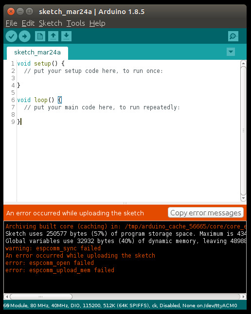

14.2 Wifi - ESP8266
Option 1: ESP8266
Note: A lot of pictures in this section are directly cited from https://www.geekstips.com/esp8266-arduino-tutorial-iot-code-example/.
An ESP8266 wifi module is provided in our Arduino course on-site, which looks like:

And its pins are defined as:
Preparation
In order to make ESP8266 module runnable on an Arduino board, we need to follow the steps on https://github.com/esp8266/Arduino.
STEP 1 - Install Arduino Core for ESP8266
Note: Make sure you enabled python2, instead of python3.
$ cd /opt/arduino/hardware
$ mkdir esp8266com
$ cd esp8266com
$ git clone https://github.com/esp8266/Arduino.git esp8266
$ cd esp8266/tool6s
$ python get.py
Platform: x86_64-pc-linux-gnu
Tool esptool-0.4.9-linux64.tar.gz already downloaded
Extracting dist/esptool-0.4.9-linux64.tar.gz
Renaming esptool-0.4.9-linux64 to esptool
Tool linux64-xtensa-lx106-elf-gb404fb9.tar.gz already downloaded
Extracting dist/linux64-xtensa-lx106-elf-gb404fb9.tar.gz
Tool mkspiffs-0.1.2-linux64.tar.gz already downloaded
Extracting dist/mkspiffs-0.1.2-linux64.tar.gz
Renaming mkspiffs-0.1.2-linux64 to mkspiffs
STEP 2 - Add Additional Boards Manager URLs
Start Arduino IDE, then click File->Preferences->Settings, fill http://arduino.esp8266.com/stable/package_esp8266com_index.json into Additional Boards Manager URLs, as:

STEP 3 - Board Manager
Then, restart Arduino IDE. Click Tools->Board->Board Manager, then we search esp, make sure Arduino AVR Boards and esp8266 are installed. Please refer to the following image:

Without the installed Arduino AVR Boards, you will possibly meet the following ERROR message:
SPIFFS Not Supported on avr
What is SPIFFS? For short, it is SPI Flash Filing System. For details, please refer to http://www.instructables.com/id/Using-ESP8266-SPIFFS/.
Afterwards, make sure Tools->Board->Generic ESP8266 Module is selected.
STEP 4 - Sketch Upload ERROR
After we make sure Board: "Generic ESP8266 Module" is selected, we are now trying to upload (after verify/compile) any sketch (here, the default sketch for testing FIRST) to Arduino board with ESP8266 connected. You will see the following ERROR messages:
warning: espcomm_sync failed
error: espcomm_open failed
error: espcomm_upload_mem failed
SPIFFS Upload failed!

By clicking Tools->ESP8266 Sketch Data Upload, you will see the following dialog:
By clicking Yes, the same ERROR messages will be given as:
[SPIFFS] data : /tmp/untitled321754874.tmp/sketch_mar24a/data
[SPIFFS] size : 64
[SPIFFS] page : 256
[SPIFFS] block : 4096
[SPIFFS] upload : /tmp/arduino_build_782393/sketch_mar24a.spiffs.bin
[SPIFFS] address: 0x6B000
[SPIFFS] reset : ck
[SPIFFS] port : /dev/ttyACM0
[SPIFFS] speed : 115200
warning: espcomm_sync failed
error: espcomm_open failed
error: espcomm_upload_mem failed
SPIFFS Upload failed!
So, it seems we failed to flash our ESP8266 Wifi module. But, we have to do something. This website https://www.forward.com.au/pfod/ESP8266/GPIOpins/index.html is just to solve this problem.
STEP 5 - Flash ESP8266
In fact, 4 different methods have been summarized in https://www.diyhobi.com/flash-program-esp-01-using-usb-serial-adapter/ to fulfill the task how to flash ESP8266.
- Flash Mode: “DIO”
- Flash Frequency: “40MHz”
- CPU Frequency: “80 MHz”
- Flash Size: “1M (64K SPIFFS)”
- Debug Port: “Disabled”
- Debug Level: “None”
- Reset Method: “ck”
- Upload Speed: “115200”
Hardware Wiring

The way how we wire the circuit is just as in geekstips.
Sketch
The code can be found at Examples_Arduino - adafruit - _002_Wifi_ESP8266 - _002_Wifi_ESP8266.ino. You can also refer to https://www.geekstips.com/esp8266-arduino-tutorial-iot-code-example/.
Using ESP8266 without Arduino Board
It is also possible run the sketch on the ESP8266 program without using an Arduino UNO board, which has been detailedly explained on this website http://www.arduinesp.com/. Three cannonical examples are given on http://www.arduinesp.com/examples:
- Blink
- Wifiwebserver
- Thingspeak Temperature Sensor Students are encouraged to finish all examples after class.
Option 2: Official Arduino Wifi Shield
You can also purchase an Arduino Wifi Shield recommended by official Arduino website(s), and accomplish Wifi communication. Please refer to the following official Arduino webpages: